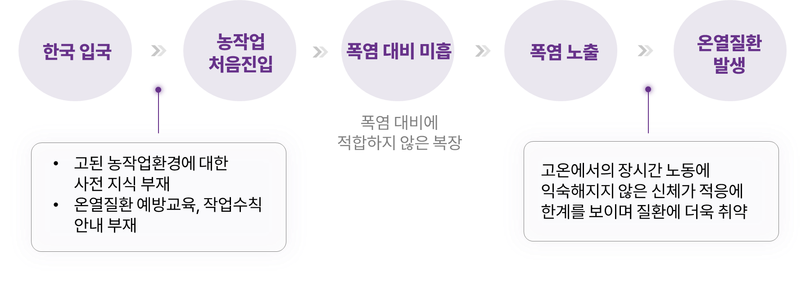
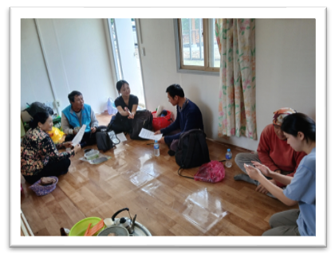
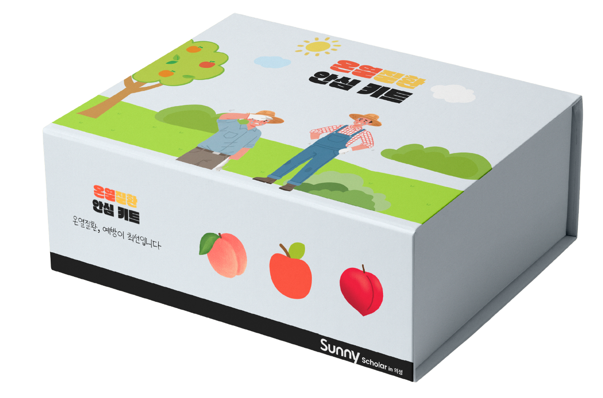
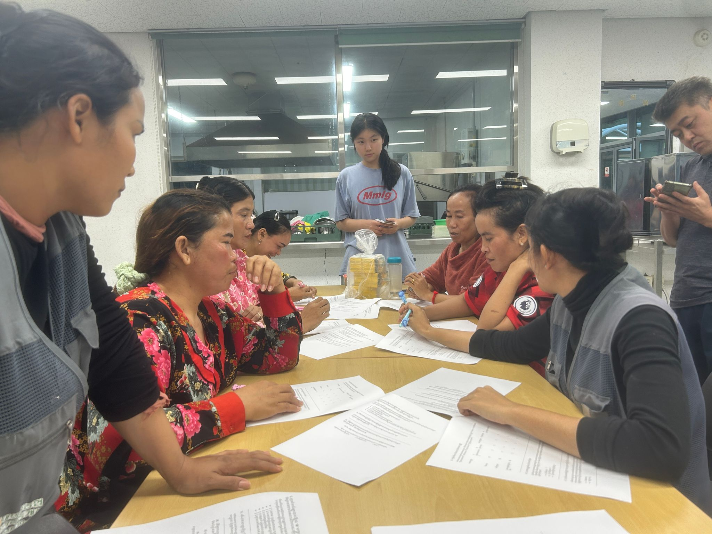
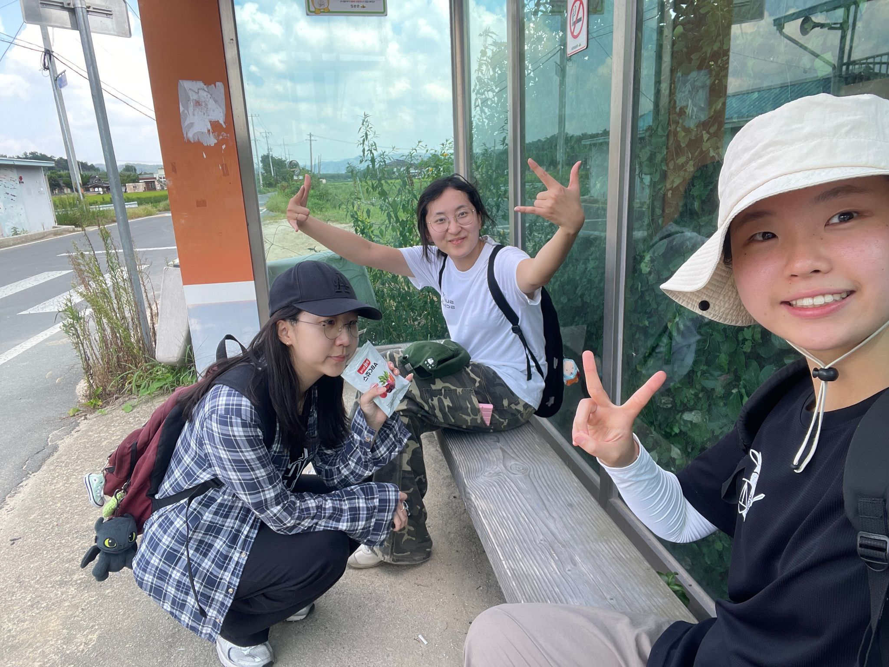
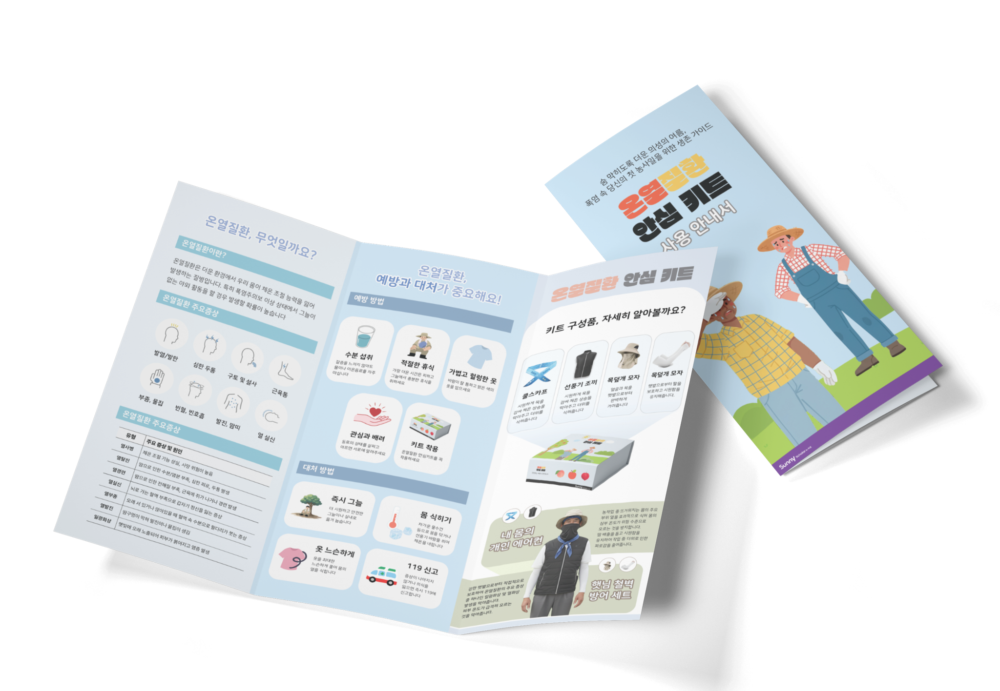
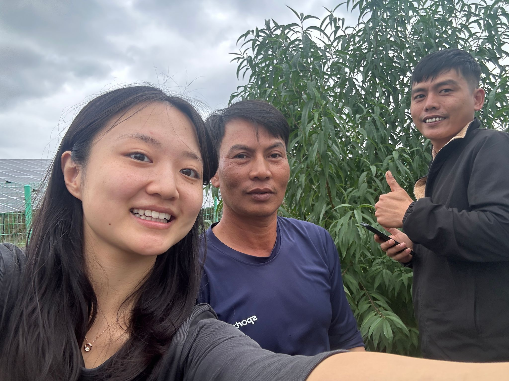
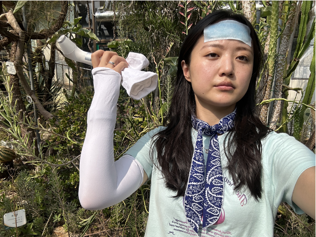
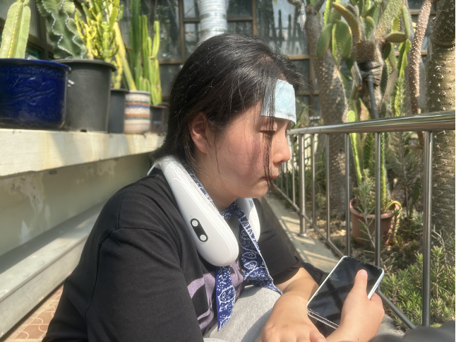
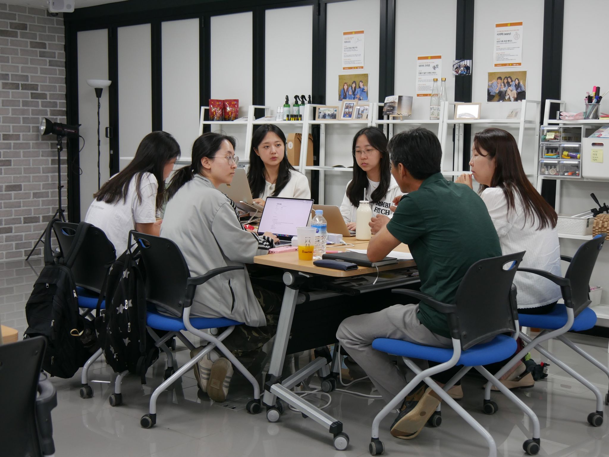

SK행복나눔재단의 문제정의 프로젝트에 참여한 팀 헷사과. 원래는 경북 의성의 농산물 유통구조를 연구하고 있었다. 사과와 마늘의 고장, 의성. 하지만 방향이 바뀐 건 한겨레21의 르포 기사를 만나면서였다.
2024년 여름, 한겨레21은 「폭염에 쓰러지는 이주노동자들」이라는 제목의 기사를 보도했다. 수박밭 지표면 온도 44도. 그 안에서 하루 종일 일하는 사람들이 있었다. 기사에는 네팔 출신 40대 남성이 폭염 속 작업 중 사망한 사건, 베트남 출신 후앙 리엔의 사례 등 한국 농촌의 비닐하우스에서 일하다 온열질환으로 쓰러지거나 사망한 이주노동자들의 이야기가 담겨 있었다.

프로젝트의 시작 — 팀 헷사과가 농촌 이주노동자 문제에 주목하게 된 계기
팀은 직접 현장을 체험하기로 했다. 여름철 의성 점곡면을 걸었다. 한여름, 1시간. 그늘 하나 없는 농촌 도로. 체험은 짧았지만, 그 짧은 시간 동안 극한 온도와 습도를 경험하며 이 환경에서 하루 8시간 이상 노동하는 이주노동자들의 현실을 실감했다.
팀 대화
팀원 A
기사를 처음 읽었을 때, 솔직히 '또 폭염 기사구나' 하고 넘길 뻔했어요. 그런데 숫자를 보니까 멈출 수가 없었어요. 매년 반복되는 거잖아요. 왜 아무것도 안 바뀌는 걸까, 그게 첫 번째 질문이었어요.
팀원 B
10분도 안 돼서 온몸이 땀에 젖었어요. 숨을 쉬기가 힘들 정도였고, 머리가 어질어질했어요. 이걸 하루 종일 한다고요? 그것도 매일? 우리는 체험이니까 나올 수 있었지만, 이 사람들은 그럴 수 없잖아요.
팀원 C
다들 '폭염 대책'이라고 하면 에어컨 틀고 물 많이 마시라는 얘기만 하잖아요. 그런데 비닐하우스에는 에어컨이 없고, 이 사람들은 물 마실 시간도 마음대로 못 가져요. 해결책이 아니라 문제 자체를 다시 봐야 한다고 생각했어요.
팀원 D
우리도 이렇게 힘들었는데, 저 분들은 진짜 오죽할까? 유통구조 연구를 계속할 수 없었어요. 눈앞에 더 급한 문제가 보이는데.
체험 이후 팀 회의에서, 팀원들은 각자의 감상과 의문을 나눴다. 이 문제는 단순히 '날씨가 더워서' 발생하는 것이 아니었다. 이주노동자들이 처한 구조적 조건 — 언어 장벽, 고용 불안정성, 의료 접근성의 부재 — 이 복합적으로 작용하고 있었다. 팀은 이 문제의 본질을 파악하기 위해 '문제정의' 단계부터 시작하기로 결정했다.

이주노동자 기숙사 대화 현장 -- 문제정의 방향을 논의하는 팀 헷사과
CHAPTER 01 — 다중적 사각지대
왜 이들은 보이지 않는가
팀 헷사과가 문제를 조사하면서 가장 놀란 점은, 이 문제가 '알려지지 않은 것'이 아니라 '알려져 있지만 보이지 않는 것'이었다는 사실이다. 매년 폭염 시즌이 되면 온열질환 뉴스가 보도되지만, 농촌 이주노동자들의 온열질환은 통계에서도, 정책에서도, 사회적 관심에서도 체계적으로 누락되어 있었다. 팀은 이를 '다중적 사각지대'라 명명하고, 네 가지 차원으로 분석했다.
BLIND SPOT 01
정책적 사각지대
농업은 '가족 단위 자영업' 프레임 안에 머물러 있다. 실제로는 고용노동이 광범위하게 존재하지만, 근로기준법의 보호를 받지 못하는 영역이 많다. 농업 분야 이주노동자에 대한 온열질환 예방 가이드라인은 사실상 부재하며, 고용허가제의 사전교육에서도 기후 관련 안전교육은 형식적인 수준에 그친다.
BLIND SPOT 02
사회적 사각지대
단기계약, 불법체류. 80%가 미등록 상태다. 의료와 산재보상에서 체계적으로 배제된다. 고용허가제 하에서 사업장 변경이 극히 제한적이기 때문에, 몸이 아파도 쉬겠다고 말하기 어렵다. '아프다'고 말할 수 없는 관계 구조가 존재한다.
BLIND SPOT 03
기후 사각지대
야외 노지 작업, 그늘 없음. 비닐하우스 내부 온도는 외기보다 10~15도 이상 높고, 습도 80% 이상에서 땀 증발이 차단된다. 작업을 중단할 권한이 없고, WBGT 기준 작업 중단 기준이 현장에서 거의 적용되지 않는다.
BLIND SPOT 04
정보 사각지대
온열질환 교육 자료, 안전교육 매뉴얼, 증상 자가 진단 도구가 한국어로만 제공된다. 캄보디아, 베트남, 태국 출신 노동자들이 증상을 인지하고 도움을 요청하는 것 자체가 구조적으로 차단되어 있다. 언어 장벽이 생명과 직결된다.
팀원 A
통계가 없으면 문제도 없는 거예요. 정책이 만들어지려면 숫자가 있어야 하는데, 이 사람들의 아픔은 숫자가 되지 못하고 있었어요. 그게 첫 번째 사각지대였어요.
이 네 겹의 사각지대는 각각 독립적으로 존재하는 것이 아니라, 서로를 강화하며 문제를 더욱 보이지 않게 만든다. 통계가 없으니 정책이 안 만들어지고, 정책이 없으니 현장이 바뀌지 않고, 현장이 안 바뀌니 사람들이 계속 쓰러지지만, 그 쓰러짐은 다시 통계에 잡히지 않는다. 팀은 이 악순환의 고리를 끊기 위해, 가장 현장에 가까운 지점 — 초기진입 이주노동자의 신체 반응 — 에서부터 접근하기로 했다.

안심키트 박스 패키지 디자인

CHAPTER 02 — 현장 배경
기후, 노동환경, 인력구성
기후: 폭염일수 22.4일, 전국 1위
한국의 여름 기온은 기후변화의 영향으로 해마다 상승하고 있다. 특히 경북 의성군은 연간 폭염일수 22.4일로 전국 1위를 기록한다. 비닐하우스 내부 온도는 외기 온도보다 10~15도 이상 높아, 한여름에는 50도를 넘기는 경우도 드물지 않다. 습도 역시 80% 이상으로, 인체의 자연 냉각 기능인 땀 증발이 사실상 차단되는 환경이다.
기후 및 노동환경 데이터
22.4일
의성 연간 폭염일수 (전국 1위)
50°C+
비닐하우스 내부 최고 온도
80%+
평균 습도 (땀 증발 차단)
8~10h
일일 평균 노동 시간
* 농촌진흥청 및 현장 측정 자료 기반. 비닐하우스 종류, 환기 시설, 작물에 따라 편차 존재.
노동환경: 그늘 없는 노지
농촌 지역은 도시 열섬효과와는 다른 방식으로 극한 고온에 노출된다. 비닐하우스 내부뿐 아니라, 사과밭, 마늘밭 같은 노지 작업 환경도 한여름에는 체감온도가 40도를 넘긴다. 그늘이 없고, 바람이 없으며, 작업을 중단할 권한이 노동자에게 없다. WBGT(습구흑구온도지수) 기준 작업 중단 기준이 존재하지만, 현장에서는 거의 적용되지 않는다.

팀원들 현장답사 -- 의성 버스정류장에서
인력구성: 64.3% 외국인 고용, 80% 미등록
한국 농촌의 인력 구조는 급격히 변화하고 있다. 농가 경영주의 평균 연령은 65세 이상이며, 젊은 노동력의 유입은 사실상 중단된 상태다. 이 공백을 메우는 것이 이주노동자들이다.
의성 지역 농가의 64.3%가 외국인을 고용하고 있다. 그러나 그중 80%는 미등록 상태다. 제도의 시야에 잡히지 않는 사람들이 이 마을의 농업을 떠받치고 있었다.
농촌 인력 구성
고용허가제(E-9 비자)를 통해 입국하는 농업 분야 이주노동자는 연간 수만 명에 달한다. 이들 중 상당수가 입국 직후 바로 현장에 배치된다. 사전 안전교육은 형식적인 수준에 그치는 경우가 많고, 한국 농촌의 기후 특성에 대한 교육은 거의 이루어지지 않는다.
이들은 주로 캄보디아, 베트남, 태국, 미얀마 등 동남아시아 출신으로, 한국의 기후와 노동 환경에 대한 사전 경험이 거의 없는 상태에서 농촌 현장에 투입된다.
특히 주목할 점은 도시통근형 노동 구조다. 이주노동자들은 도시 외곽의 숙소에서 농촌 작업장으로 매일 통근하는 형태로 일한다. 마을에 거주하면서 농장에 출퇴근하는 구조이기 때문에, 지역 커뮤니티와의 접점이 제한적이고, 비상 상황에서 즉시 도움을 받기 어렵다.
현장 관계자
일손이 없어요. 하우스 일은 젊은 사람들이 안 하려 하니까요. 외국인 친구들이 와야 농사를 지을 수 있는데, 올해 처음 온 친구들은 더위를 정말 힘들어해요. 적응할 시간이 있으면 좋겠지만, 농사는 때를 놓치면 안 되니까...

안심키트 다국어 리플렛 -- 10개 언어 지원
CHAPTER 03 — 현장 문제
31명 중 13명, 42%가 경험한 것
팀 헷사과의 현장 조사 결과, 31명의 이주노동자를 직접 만났다. 그중 13명, 42%가 온열질환을 경험했다고 답했다. 이는 전체 근로자 평균의 수배에 달하는 수치다.
온열질환 핵심 지표
42%
이주노동자 온열질환 경험률
13/31
현장조사 응답자 수
22.4일
의성 폭염일수 (전국 1위)
80%
미등록 비율
현장의 목소리
라오스 출신 C씨
얼굴이 창백해지고 몸이 덜덜 떨렸어요. 냉수를 머리에 들이부으면서 버텼습니다. 쉬면 안 되니까요. 사장님한테 뭐라 하기도 어렵고, 같이 일하는 사람들한테도 미안하고. 그래서 그냥 참았어요.
인도네시아 출신 D씨
머리는 너무 어지럽고 눈앞이 흐린데 어떻게 해야 할지 모르겠어서... 한국말을 잘 못하니까 증상을 설명할 수가 없었어요. 그냥 손으로 머리를 짚으면서 웅크리고 있었어요. 누가 물을 가져다줬는데 그게 다였어요.
두리인력 50대 관계자
처음 갈 땐 어떻게 가야 하는지 알 방법이 없으니까. 한국 날씨가 이렇게 더운 줄 모르고 오는 사람들이 많아요. 고향에서는 이런 습도에서 일해본 적이 없는데, 여기 와서 바로 비닐하우스에 들어가니까 몸이 못 버티는 거죠.
이주노동자센터 소장
이주노동자 문제는 팔, 다리가 잘려야만 뉴스에 나와요. 온열질환? 열사병으로 사망해야 기사가 돼요. 그 전 단계에서 쓰러지는 사람들, 어지러운데 참고 일하는 사람들은 아무도 안 봐요. 이 사람들의 일상적인 고통은 뉴스가 되지 못해요.

팀 헷사과, 이주노동자 현장 인터뷰
초기진입자 vs 숙련자: 생리학적 데이터
팀이 발견한 가장 중요한 패턴은 '초기진입'이라는 변수였다. 한국에 온 지 얼마 되지 않은 노동자, 즉 고온다습한 농업 환경에 아직 순화(acclimatization)되지 않은 노동자들의 온열질환 위험이 현저히 높았다.
초기진입자 vs 숙련자 — 생리학적 비교
측정 항목초기진입자숙련자
평균 심박수136 bpm118 bpm
교감신경 활성도0.842.53
심부체온38.62°C37.83°C
초기진입자의 심부체온 38.62°C. 온열질환 경계선이다. 열순화는 통상 7~14일이 소요되며, 이 기간 동안 신체는 고온 환경에 적응하기 위해 땀 분비량 증가, 심박수 조절, 체온 조절 기능 향상 등의 생리적 변화를 거친다. 그러나 초기진입 노동자들에게는 이 적응 기간이 주어지지 않는다.

안심키트 착용 실험 -- 팔토시와 쿨링 스카프
온열질환 발생과정
온열질환의 발생과정은 점진적이다. 처음에는 두통, 어지러움, 메스꺼움 같은 경미한 증상으로 시작하지만, 적절한 조치 없이 작업을 계속하면 열탈진(heat exhaustion)으로 진행되고, 최악의 경우 열사병(heat stroke)으로 이어져 의식을 잃거나 사망에 이를 수 있다.
문제는 초기 증상 단계에서 노동자 스스로가 이를 인지하지 못하거나, 인지하더라도 작업을 중단할 수 없는 상황에 놓여 있다는 점이다. 적응할 시간도, 정보도, 보호 장치도 없는 사람들의 첫 번째 여름.
이주노동자 인터뷰 (통역)
머리가 아프고 눈이 안 보여도 일해야 해요. 쉬면 사장님이 안 좋아해요. 처음에는 더운 게 너무 힘들었는데, 지금은 좀 나아요. 그런데 새로 온 친구는 어제 쓰러졌어요. 병원에 갔는데 괜찮대요. 그 친구가 걱정돼요.

안심키트 착용 실험 -- 목 선풍기 체온 측정
현장 인터뷰이주노동자 설문조사 현장
CHAPTER 04 — 핵심 원인
사전 · 현장 · 사후, 세 단계의 부재
온열질환은 '더위' 때문이 아니라, '준비 없는 더위' 때문에 발생한다. 팀 헷사과는 현장 조사와 인터뷰, 문헌 분석을 종합하여, 초기진입 이주노동자의 온열질환이 세 단계의 구조적 부재에서 비롯된다는 결론에 도달했다.
STAGE 1 — 사전 단계의 부재
입국 전 · 직후 교육과 준비의 부재
이주노동자들은 출국 전 한국의 기후 특성, 특히 여름철 농업 현장의 극한 환경에 대한 교육을 거의 받지 못한다. 고용허가제의 사전교육은 노동법, 기본 한국어 등에 집중되어 있으며, 작업장 안전교육 중 온열질환 예방에 대한 내용은 형식적이거나 부재한다. 입국 후에도 열순화를 위한 점진적 작업량 조절 없이 즉시 전일 노동에 투입되는 것이 일반적이다.
▼
STAGE 2 — 현장 단계의 부재
작업 중 모니터링과 대응 체계의 부재
비닐하우스 내부에는 온도·습도를 실시간으로 모니터링하는 장비가 없는 경우가 대부분이다. WBGT 기준 작업 중단 기준이 있지만 현장에서는 거의 적용되지 않는다. 노동자 스스로 증상을 인지하더라도, 다국어 증상 체크리스트나 응급 대응 매뉴얼이 없어 적시 대응이 어렵다. 작업 중 정기적 휴식과 수분 보충도 체계화되어 있지 않다.
▼
STAGE 3 — 사후 단계의 부재
발생 후 대응과 기록 체계의 부재
온열질환이 발생하더라도 체계적인 응급 대응 프로토콜이 없다. 농촌 지역 의료 접근성 문제와 언어 장벽으로 인해, 증상이 심각해져도 적절한 의료 서비스를 받기 어렵다. 발생 건수가 산재로 보고되는 비율도 극히 낮아, 통계적 사각지대가 재생산된다. 이는 다시 사전 단계의 정책 수립을 어렵게 만드는 악순환으로 이어진다.
팀원 B
세 단계가 다 무너져 있는 거예요. 오기 전에 준비가 없고, 일하는 동안 보호가 없고, 쓰러진 다음에 기록도 없고. 어디 하나만 잡아도 살릴 수 있는 사람이 있는데, 세 군데 다 빠져 있으니까 매년 같은 일이 반복되는 거죠.
결국, 이 문제의 핵심은 '더위'가 아니라 '더위에 대한 준비와 대응의 부재'에 있었다. 같은 온도에서 일하더라도, 사전에 열순화 프로그램을 거치고, 현장에서 적절한 모니터링과 휴식이 보장되며, 증상 발생 시 신속히 대응할 수 있는 체계가 있다면, 온열질환의 발생률은 극적으로 줄어들 수 있다. 팀은 이 세 단계 중 가장 즉각적으로 개입할 수 있는 '현장 단계'에 집중하여 솔루션을 설계하기로 했다.
온열질환 발생과정 타임라인
CHAPTER 05 — 솔루션
온열질환 안심키트
팀 헷사과가 설계한 솔루션은 '안심키트(Safety Kit)'다. 이름에는 '안심(安心)'이라는 이중적 의미를 담았다 — 몸의 안전(安)과 마음의 편안함(心). 모르는 채로 일터에 나서지 않도록. 물리적 보호 장비와 정보 접근을 결합한 통합 키트다.
구성품
🦺
선풍기 조끼
휴대용 팬 내장 체감온도 3~4°C 저감
🧣
쿨링 스카프
냉각 소재 경부 냉각
🧤
팔토시 & 모자
자외선 차단 직사광선 방호
📋
10개 언어 리플렛
다국어 가이드 시각적 증상 체크
10개 언어 리플렛
캄보디아어, 베트남어, 태국어, 미얀마어, 한국어, 네팔어, 인도네시아어, 중국어, 우즈베크어, 영어 등 10개 언어로 제작된 시각적 증상 체크카드. 글을 모르더라도 그림과 색상 코드만으로 자신의 상태를 판단할 수 있도록 설계했다. 녹색(안전) → 노란색(주의) → 빨간색(위험)의 단계별 대응 행동이 명시되어 있으며, 방수 처리되어 작업 중에도 주머니에 넣고 다닐 수 있다.
온열질환 안심키트 다국어 리플렛 — 10개 언어 지원
실험 설계 및 결과
팀은 안심키트의 효과를 검증하기 위해, 협력 농가에서 소규모 파일럿 실험을 진행했다. 안심키트를 사용한 그룹과 사용하지 않은 그룹의 온열질환 관련 지표를 비교했다.
3~4°C
체감온도 감소
1.13°C
평균 체온 감소
파일럿 실험 상세 결과
78%
증상 자가 인지율 (대조군 31%)
2.4배
자발적 휴식 횟수 증가
65%
경미 증상 단계 자가 대응률
0건
실험 기간 중 심각 온열질환 발생
* 파일럿 실험은 소규모(N=24)로 진행되었으며, 통계적 일반화에는 한계가 있다. 그러나 방향성 확인에는 유의미한 결과로 판단된다.
실험 참여 농장주
처음에는 '이런 걸로 뭐가 달라지겠나' 했어요. 그런데 카드를 받은 친구들이 서로 색깔을 보여주면서 확인하더라고요. '나 지금 노란색이야' 이러면서. 말이 안 통해도 색깔로 통하니까, 옆에 있는 내가 '쉬어' 하기도 쉬웠어요.
솔루션의 의의
4가지 의의
01 — 최소 유효 수단
세 단계의 구조적 부재 중 '현장 단계'에 직접 개입하는 Minimum Viable Intervention. 시스템 전체를 바꾸지 못하더라도, 노동자 개인이 스스로를 보호할 수 있는 첫 번째 방어선.
02 — 언어 장벽 돌파
체크카드의 색상 코드 시스템이 노동자-노동자 간, 노동자-고용주 간의 건강 상태 소통을 가능하게 했다.
03 — 자기 보호 역량
외부 개입에 의존하지 않고, 노동자 스스로 자신의 상태를 모니터링하고 판단할 수 있도록 설계.
04 — 관계적 소통 채널
'아프다'고 말할 수 없었던 관계적 사각지대에서, 카드를 보여주는 것만으로 휴식을 요청할 수 있는 새로운 소통 채널.
안심키트 박스 패키지

연구 회의 중인 헷사과 팀농촌 노동현장 -- 상자를 트럭에 싣는 노동자들
EPILOGUE
다음 여름, 같은 실수를 반복하지 않기 위해
팀 헷사과의 프로젝트는 2024년 9월을 기점으로 1차 사이클을 마무리했다. 그러나 이 프로젝트가 드러낸 문제는 한 팀의 한 학기 프로젝트로 해결될 수 있는 성질의 것이 아니다. 팀은 프로젝트의 결과물과 한계를 솔직하게 정리하며, 다음 단계를 위한 방향을 제시한다.
후속 계획 5단계
NEXT STEPS
01안심키트 개선 및 확대 배포 — 의성군 옥산면 10개 농가 대상. 파일럿 피드백을 반영하여 키트 구성 최적화. 다국어 지원 언어 추가(네팔어, 인도네시아어).
02배포 채널 다변화 — 아시아마트, 인력업체(두리인력 등)를 통한 키트 배포. 지자체·농협 연계 채널 구축.
03열순화 프로그램 매뉴얼 개발 — 초기진입 노동자를 위한 7~14일 점진적 작업량 조절 가이드라인. 농장주용 실행 매뉴얼로 제작하여 고용허가제 사전교육에 포함 제안.
04디지털 모니터링 시스템 연구 — 저비용 웨어러블 디바이스를 활용한 실시간 체온·심박수 모니터링 가능성 탐색. 위험 수준 도달 시 자동 알림 시스템.
05정책 제안서 작성 — 현장 데이터와 실험 결과를 기반으로, 농업 분야 이주노동자 온열질환 예방 가이드라인 제정을 위한 정책 제안서 작성 및 의성군·관계 기관 제출.
연구 한계
팀은 이 프로젝트의 한계를 명확히 인식하고 있다. 첫째, 파일럿 실험의 규모가 소규모(N=24)로, 통계적 일반화에 한계가 있다. 둘째, 안심키트는 '현장 단계'에 집중한 솔루션으로, 사전 단계(정책·제도)와 사후 단계(의료·기록)의 구조적 문제는 여전히 미해결이다. 셋째, 프로젝트 기간이 한 학기로 한정되어, 장기적 효과 추적이 이루어지지 못했다.
그러나 이 한계들은 동시에 다음 연구와 실천의 방향을 가리키기도 한다. 소규모였기 때문에 정교한 파일럿이 가능했고, 현장에 집중했기 때문에 실행 가능한 솔루션이 나왔으며, 기간이 한정되었기 때문에 집중적인 문제정의가 이루어질 수 있었다.
임팩트 캔버스
IMPACT CANVAS — TEAM 헷사과
1단계: 문제 정의
농촌 초기진입 이주노동자의 온열질환은 기후 문제가 아닌 '준비 없는 노출'의 문제다. 통계적·언어적·의료적·관계적 사각지대가 중첩되어, 매년 같은 피해가 반복되고 있다.
2단계: 핵심 인사이트
온열질환 발생은 '초기진입 3개월'에 집중된다. 열순화 부재 + 언어 장벽 + 관계적 제약이 결합되어, 가장 취약한 시기에 가장 적은 보호를 받는 역설적 구조.
3단계: 솔루션 & 검증
안심키트(다국어 체크카드 + 쿨링 아이템 + 응급 연락 시스템)를 통해 현장 단계에 직접 개입. 파일럿 결과: 증상 자가 인지율 31% → 78%, 자발적 휴식 2.4배 증가.
4단계: 확산 가능성
저비용·고효과 모델로 타 농업 지역 확산 가능. 지자체·농협 연계 배포 채널 활용. 고용허가제 사전교육 과정 포함 제안. 디지털 모니터링으로의 확장 가능성.
이주노동자센터 소장
이 사람들의 문제가 보이기 시작하면, 사람들은 움직입니다. 지금까지는 안 보였으니까 안 움직인 거예요. 보이게 만드는 것, 그게 첫 번째 일이에요. 이 팀이 그걸 해준 거예요.
팀원 A
우리가 모든 걸 해결한 건 아니에요. 그건 불가능하고요. 그런데 적어도 이 문제가 '보이게' 만드는 데는 성공했다고 생각해요. 보이면 사람들이 움직이잖아요. 그게 첫걸음이에요.
농촌의 비닐하우스 안에서, 보이지 않는 사람들이 오늘도 일하고 있다. 이들의 몸은 아직 이 더위에 준비되지 않았고, 이들의 목소리는 아직 우리에게 닿지 않고 있다. 팀 헷사과가 만든 안심키트는 작은 시작이지만, 그 작은 시작이 변화의 첫 번째 신호가 될 수 있다.
다음 여름이 오기 전에, 준비해야 할 것들이 있다. 그 '알 방법이 없는' 첫 여름을, 더 이상 맨몸으로 시작하지 않도록.
이주노동자 기숙사 심층 인터뷰 현장팀 헷사과
◆
볕 아래 보이지 않는 사람들이
보이기 시작할 때,
변화는 이미 시작된 것이다.
Team 헷사과 · SK행복나눔재단 문제정의 프로젝트 2024 농촌 초기진입 이주노동자 온열질환